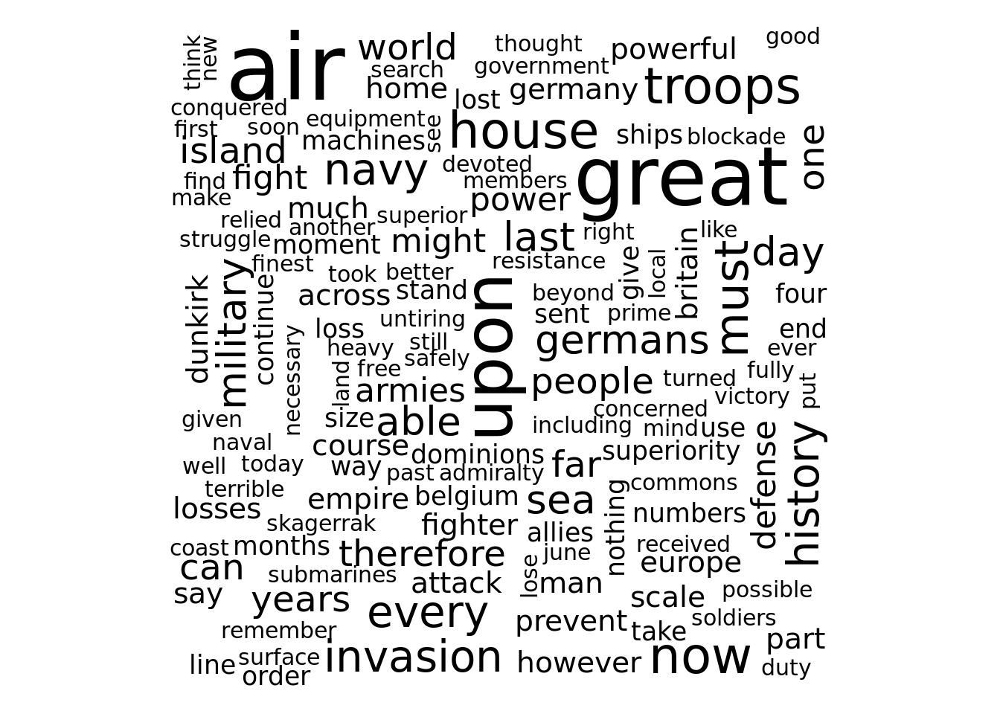
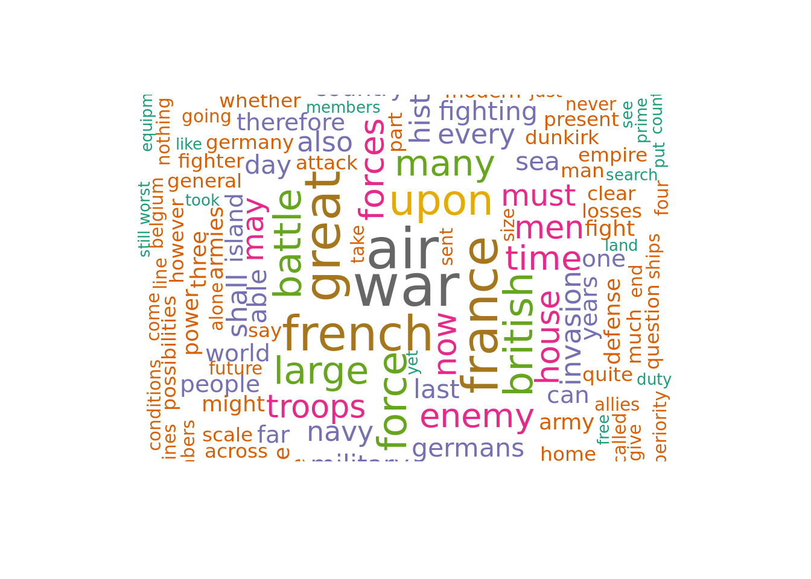

[1] "VectorSource" "SimpleSource" "Source" <<SimpleCorpus>>
Metadata: corpus specific: 1, document level (indexed): 0
Content: documents: 38
[1]
[2]
[3] \n At 5:30 a.m. on May 10, 1940, Nazi Germany began a massive attack against\n Holland, Belgium, Luxembourg, and France. Defending those countries were\n soldiers of the British Expeditionary Force along with the French, Belgian,\n and Dutch (Allied) armies. \n
[4] The Germans relied on an aggressive battle plan,\n utilizing modern communications such as radio to direct troops in the field. The Allies, for their part, assumed a defensive posture, just as they had done at the start of World War I, and in many cases still relied\n on hand-delivered messages.
[5] As a result, the German Blitzkrieg\n (lightning attack) caught the Allies off-guard. German Panzer tanks staged a surprise attack through the 'impassable' Ardennes Forest then turned northward\n and soon surrounded the bulk of the Allied armies in Belgium. The "Miracle at Dunkirk" occurred\n next as 338,000 British and French soldiers were hurriedly evacuated from the coastline\n by Royal Navy ships and a flotilla\n of civilian boats of every shape and size.
[6] After just a few weeks of battle, Hitler's armies had conquered Holland, Luxembourg and Belgium. Paris fell on June 14th. Three days later, the French requested an armistice.
[7] The following day, June 18th, British Prime Minister Winston Churchill\n spoke to the House of Commons about the disastrous turn of events in Europe amid the stark realization\n that Britain now stood alone against the seemingly unstoppable might of Hitler's military machine.
[8]
[9] I spoke the other day of the colossal military disaster which occurred\nwhen the French High Command failed to withdraw the northern Armies from\nBelgium at the moment when they knew that the French front was decisively\nbroken at Sedan and on the Meuse. This delay entailed the loss of fifteen\nor sixteen French divisions and threw out of action for the critical period\nthe whole of the British Expeditionary Force. Our Army and 120,000 French\ntroops were indeed rescued by the British Navy from Dunkirk but only with\nthe loss of their cannon, vehicles and modern equipment. This loss inevitably\ntook some weeks to repair, and in the first two of those weeks the battle\nin France has been lost. When we consider the heroic resistance made by\nthe French Army against heavy odds in this battle, the enormous losses\ninflicted upon the enemy and the evident exhaustion of the enemy, it may\nwell be the thought that these 25 divisions of the best-trained and best-equipped\ntroops might have turned the scale. However, General Weygand had to fight\nwithout them. Only three British divisions or their equivalent were able\nto stand in the line with their French comrades. They have suffered severely,\nbut they have fought well. We sent every man we could to France as fast\nas we could re-equip and transport their formations.
[10] I am not reciting these facts for the purpose of recrimination. That\nI judge to be utterly futile and even harmful. We cannot afford it. I recite\nthem in order to explain why it was we did not have, as we could have had,\nbetween twelve and fourteen British divisions fighting in the line in this\ngreat battle instead of only three. Now I put all this aside. I put it\non the shelf, from which the historians, when they have time, will select\ntheir documents to tell their stories. We have to think of the future and\nnot of the past. This also applies in a small way to our own affairs at\nhome. There are many who would hold an inquest in the House of Commons\non the conduct of the Governments--and of Parliaments, for they are in\nit, too--during the years which led up to this catastrophe. They seek to\nindict those who were responsible for the guidance of our affairs. This\nalso would be a foolish and pernicious process. There are too many in it.\nLet each man search his conscience and search his speeches. I frequently\nsearch mine.
[11] Of this I am quite sure, that if we open a quarrel between the past\nand the present, we shall find that we have lost the future. Therefore,\nI cannot accept the drawing of any distinctions between members of the\npresent Government. It was formed at a moment of crisis in order to unite\nall the Parties and all sections of opinion. It has received the almost\nunanimous support of both Houses of Parliament. Its members are going to\nstand together, and, subject to the authority of the House of Commons,\nwe are going to govern the country and fight the war. It is absolutely\nnecessary at a time like this that every Minister who tries each day to\ndo his duty shall be respected; and their subordinates must know that their\nchiefs are not threatened men, men who are here today and gone tomorrow,\nbut that their directions must be punctually and faithfully obeyed. Without\nthis concentrated power we cannot face what lies before us. I should not\nthink it would be very advantageous for the House to prolong this debate\nthis afternoon under conditions of public stress. Many facts are not clear\nthat will be clear in a short time. We are to have a secret session on\nThursday, and I should think that would be a better opportunity for the\nmany earnest expressions of opinion which members will desire to make and\nfor the House to discuss vital matters without having everything read the\nnext morning by our dangerous foes.
[12] The disastrous military events which have happened during the past\nfortnight have not come to me with any sense of surprise. Indeed, I indicated\na fortnight ago as clearly as I could to the House that the worst possibilities\nwere open; and I made it perfectly clear then that whatever happened in\nFrance would make no difference to the resolve of Britain and the British\nEmpire to fight on, if necessary for years, if necessary alone.
[13] During the last few days we have successfully brought off the great\nmajority of the troops we had on the line of communication in France; and\nseven-eighths of the troops we have sent to France since the beginning\nof the war--that is to say, about 350,000 out of 400,000 men--are safely\nback in this country. Others are still fighting with the French, and fighting\nwith considerable success in their local encounters against the enemy.\nWe have also brought back a great mass of stores, rifles and munitions\nof all kinds which had been accumulated in France during the last nine\nmonths.
[14] We have, therefore, in this Island today a very large and powerful\nmilitary force. This force comprises all our best-trained and our finest\ntroops, including scores of thousands of those who have already measured\ntheir quality against the Germans and found themselves at no disadvantage.\nWe have under arms at the present time in this Island over a million and\na quarter men. Behind these we have the Local Defense Volunteers, numbering\nhalf a million, only a portion of whom, however, are yet armed with rifles\nor other firearms. We have incorporated into our Defense Forces every man\nfor whom we have a weapon. We expect very large additions to our weapons\nin the near future, and in preparation for this we intend forthwith to\ncall up, drill and train further large numbers. Those who are not called\nup, or else are employed during the vast business of munitions production\nin all its branches--and their ramifications are innumerable--will serve\ntheir country best by remaining at their ordinary work until they receive\ntheir summons. We have also over here Dominions armies. The Canadians had\nactually landed in France, but have now been safely withdrawn, much disappointed,\nbut in perfect order, with all their artillery and equipment. And these\nvery high-class forces from the Dominions will now take part in the defense\nof the Mother Country.
[15] Lest the account which I have given of these large forces should\nraise the question: Why did they not take part in the great battle in France?\nI must make it clear that, apart from the divisions training and organizing\nat home, only twelve divisions were equipped to fight upon a scale which\njustified their being sent abroad. And this was fully up to the number\nwhich the French had been led to expect would be available in France at\nthe ninth month of the war. The rest of our forces at home have a fighting\nvalue for home defense which will, of course, steadily increase every week\nthat passes. Thus, the invasion of Great Britain would at this time require\nthe transportation across the sea of hostile armies on a very large scale,\nand after they had been so transported they would have to be continually\nmaintained with all the masses of munitions and supplies which are required\nfor continuous battle--as continuous battle it will surely be.
[16] Here is where we come to the Navy--and after all, we have a Navy.\nSome people seem to forget that we have a Navy. We must remind them. For\nthe last thirty years I have been concerned in discussions about the possibilities\nof oversea invasion, and I took the responsibility on behalf of the Admiralty,\nat the beginning of the last war, of allowing all regular troops to be\nsent out of the country. That was a very serious step to take, because\nour Territorials had only just been called up and were quite untrained.\nTherefore, this Island was for several months particularly denuded of fighting\ntroops. The Admiralty had confidence at that time in their ability to prevent\na mass invasion even though at that time the Germans had a magnificent\nbattle fleet in the proportion of 10 to 16, even though they were capable\nof fighting a general engagement every day and any day, whereas now they\nhave only a couple of heavy ships worth speaking of--the Scharnhorst and\nthe Gneisenau. We are also told that the Italian Navy is to come out and\ngain sea superiority in these waters. If they seriously intend it, I shall\nonly say that we shall be delighted to offer Signor Mussolini a free and\nsafeguarded passage through the Strait of Gibraltar in order that he may\nplay the part to which he aspires. There is a general curiosity in the\nBritish Fleet to find out whether the Italians are up to the level they\nwere at in the last war or whether they have fallen off at all.
[17] Therefore, it seems to me that as far as sea-borne invasion on a\ngreat scale is concerned, we are far more capable of meeting it today than\nwe were at many periods in the last war and during the early months of\nthis war, before our other troops were trained, and while the B.E.F. had\nproceeded abroad. Now, the Navy have never pretended to be able to prevent\nraids by bodies of 5,000 or 10,000 men flung suddenly across and thrown\nashore at several points on the coast some dark night or foggy morning.\nThe efficacy of sea power, especially under modern conditions, depends\nupon the invading force being of large size; It has to be of large size,\nin view of our military strength, to be of any use. If it is of large size,\nthen the Navy have something they can find and meet and, as it were, bite\non. Now, we must remember that even five divisions, however lightly equipped,\nwould require 200 to 250 ships, and with modern air reconnaissance and\nphotography it would not be easy to collect such an armada, marshal it,\nand conduct it across the sea without any powerful naval forces to escort\nit; and there would be very great possibilities, to put it mildly, that\nthis armada would be intercepted long before it reached the coast, and\nall the men drowned in the sea or, at the worst blown to pieces with their\nequipment while they were trying to land. We also have a great system of\nminefields, recently strongly reinforced, through which we alone know the\nchannels. If the enemy tries to sweep passages through these minefields,\nit will be the task of the Navy to destroy the mine-sweepers and any other\nforces employed to protect them. There should be no difficulty in this,\nowing to our great superiority at sea.
[18] Those are the regular, well-tested, well-proved arguments on which\nwe have relied during many years in peace and war. But the question is\nwhether there are any new methods by which those solid assurances can be\ncircumvented. Odd as it may seem, some attention has been given to this\nby the Admiralty, whose prime duty and responsibility is to destroy any\nlarge sea-borne expedition before it reaches, or at the moment when it\nreaches, these shores. It would not be a good thing for me to go into details\nof this. It might suggest ideas to other people which they have not thought\nof, and they would not be likely to give us any of their ideas in exchange.\nAll I will say is that untiring vigilance and mind-searching must be devoted\nto the subject, because the enemy is crafty and cunning and full of novel\ntreacheries and stratagems. The House may be assured that the utmost ingenuity\nis being displayed and imagination is being evoked from large numbers of\ncompetent officers, well-trained in tactics and thoroughly up to date,\nto measure and counterwork novel possibilities. Untiring vigilance and\nuntiring searching of the mind is being, and must be, devoted to the subject,\nbecause, remember, the enemy is crafty and there is no dirty trick he will\nnot do.
[19] Some people will ask why, then, was it that the British Navy was\nnot able to prevent the movement of a large army from Germany into Norway\nacross the Skagerrak? But the conditions in the Channel and in the North\nSea are in no way like those which prevail in the Skagerrak. In the Skagerrak,\nbecause of the distance, we could give no air support to our surface ships,\nand consequently, lying as we did close to the enemy's main air power,\nwe were compelled to use only our submarines. We could not enforce the\ndecisive blockade or interruption which is possible from surface vessels.\nOur submarines took a heavy toll but could not, by themselves, prevent\nthe invasion of Norway. In the Channel and in the North Sea, on the other\nhand, our superior naval surface forces, aided by our submarines, will\noperate with close and effective air assistance.
[20] This brings me, naturally, to the great question of invasion from\nthe air, and of the impending struggle between the British and German Air\nForces. It seems quite clear that no invasion on a scale beyond the capacity\nof our land forces to crush speedily is likely to take place from the air\nuntil our Air Force has been definitely overpowered. In the meantime, there\nmay be raids by parachute troops and attempted descents of airborne soldiers.\nWe should be able to give those gentry a warm reception both in the air\nand on the ground, if they reach it in any condition to continue the dispute.\nBut the great question is: Can we break Hitler's air weapon? Now, of course,\nit is a very great pity that we have not got an Air Force at least equal\nto that of the most powerful enemy within striking distance of these shores.\nBut we have a very powerful Air Force which has proved itself far superior\nin quality, both in men and in many types of machine, to what we have met\nso far in the numerous and fierce air battles which have been fought with\nthe Germans. In France, where we were at a considerable disadvantage and\nlost many machines on the ground when they were standing round the aerodromes,\nwe were accustomed to inflict in the air losses of as much as two and two-and-a-half\nto one. In the fighting over Dunkirk, which was a sort of no-man's-land,\nwe undoubtedly beat the German Air Force, and gained the mastery of the\nlocal air, inflicting here a loss of three or four to one day after day.\nAnyone who looks at the photographs which were published a week or so ago\nof the re-embarkation, showing the masses of troops assembled on the beach\nand forming an ideal target for hours at a time, must realize that this\nre-embarkation would not have been possible unless the enemy had resigned\nall hope of recovering air superiority at that time and at that place.\n
[21] In the defense of this Island the advantages to the defenders will\nbe much greater than they were in the fighting around Dunkirk. We hope\nto improve on the rate of three or four to one which was realized at Dunkirk;\nand in addition all our injured machines and their crews which get down\nsafely--and, surprisingly, a very great many injured machines and men do\nget down safely in modern air fighting--all of these will fall, in an attack\nupon these Islands, on friendly soil and live to fight another day; whereas\nall the injured enemy machines and their complements will be total losses\nas far as the war is concerned.
[22] During the great battle in France, we gave very powerful and continuous\naid to the French Army, both by fighters and bombers; but in spite of every\nkind of pressure we never would allow the entire metropolitan fighter strength\nof the Air Force to be consumed. This decision was painful, but it was\nalso right, because the fortunes of the battle in France could not have\nbeen decisively affected even if we had thrown in our entire fighter force.\nThat battle was lost by the unfortunate strategical opening, by the extraordinary\nand unforseen power of the armored columns, and by the great preponderance\nof the German Army in numbers. Our fighter Air Force might easily have\nbeen exhausted as a mere accident in that great struggle, and then we should\nhave found ourselves at the present time in a very serious plight. But\nas it is, I am happy to inform the House that our fighter strength is stronger\nat the present time relatively to the Germans, who have suffered terrible\nlosses, than it has ever been; and consequently we believe ourselves possessed\nof the capacity to continue the war in the air under better conditions\nthan we have ever experienced before. I look forward confidently to the\nexploits of our fighter pilots--these splendid men, this brilliant youth--who\nwill have the glory of saving their native land, their island home, and\nall they love, from the most deadly of all attacks.
[23] There remains, of course, the danger of bombing attacks, which will\ncertainly be made very soon upon us by the bomber forces of the enemy.\nIt is true that the German bomber force is superior in numbers to ours;\nbut we have a very large bomber force also, which we shall use to strike\nat military targets in Germany without intermission. I do not at all underrate\nthe severity of the ordeal which lies before us; but I believe our countrymen\nwill show themselves capable of standing up to it, like the brave men of\nBarcelona, and will be able to stand up to it, and carry on in spite of\nit, at least as well as any other people in the world. Much will depend\nupon this; every man and every woman will have the chance to show the finest\nqualities of their race, and render the highest service to their cause.\nFor all of us, at this time, whatever our sphere, our station, our occupation\nor our duties, it will be a help to remember the famous lines:
[24] He nothing common did or mean, Upon that memorable scene.
[25] I have thought it right upon this occasion to give the House and\nthe country some indication of the solid, practical grounds upon which\nwe base our inflexible resolve to continue the war. There are a good many\npeople who say, 'Never mind. Win or lose, sink or swim, better die than\nsubmit to tyranny--and such a tyranny.' And I do not dissociate myself\nfrom them. But I can assure them that our professional advisers of the\nthree Services unitedly advise that we should carry on the war, and that\nthere are good and reasonable hopes of final victory. We have fully informed\nand consulted all the self-governing Dominions, these great communities\nfar beyond the oceans who have been built up on our laws and on our civilization,\nand who are absolutely free to choose their course, but are absolutely\ndevoted to the ancient Motherland, and who feel themselves inspired by\nthe same emotions which lead me to stake our all upon duty and honor. We\nhave fully consulted them, and I have received from their Prime Ministers,\nMr. Mackenzie King of Canada, Mr. Menzies of Australia, Mr. Fraser of New\nZealand, and General Smuts of South Africa--that wonderful man, with his\nimmense profound mind, and his eye watching from a distance the whole panorama\nof European affairs--I have received from all these eminent men, who all\nhave Governments behind them elected on wide franchises, who are all there\nbecause they represent the will of their people, messages couched in the\nmost moving terms in which they endorse our decision to fight on, and declare\nthemselves ready to share our fortunes and to persevere to the end. That\nis what we are going to do.
[26] We may now ask ourselves: In what way has our position worsened since\nthe beginning of the war? It has worsened by the fact that the Germans\nhave conquered a large part of the coast line of Western Europe, and many\nsmall countries have been overrun by them. This aggravates the possibilities\nof air attack and adds to our naval preoccupations. It in no way diminishes,\nbut on the contrary definitely increases, the power of our long-distance\nblockade. Similarly, the entrance of Italy into the war increases the power\nof our long-distance blockade. We have stopped the worst leak by that.\nWe do not know whether military resistance will come to an end in France\nor not, but should it do so, then of course the Germans will be able to\nconcentrate their forces, both military and industrial, upon us. But for\nthe reasons I have given to the House these will not be found so easy to\napply. If invasion has become more imminent, as no doubt it has, we, being\nrelieved from the task of maintaining a large army in France, have far\nlarger and more efficient forces to meet it.
[27] If Hitler can bring under his despotic control the industries of\nthe countries he has conquered, this will add greatly to his already vast\narmament output. On the other hand, this will not happen immediately, and\nwe are now assured of immense, continuous and increasing support in supplies\nand munitions of all kinds from the United States; and especially of aeroplanes\nand pilots from the Dominions and across the oceans coming from regions\nwhich are beyond the reach of enemy bombers.
[28] I do not see how any of these factors can operate to our detriment\non balance before the winter comes; and the winter will impose a strain\nupon the Nazi regime, with almost all Europe writhing and starving under\nits cruel heel, which, for all their ruthlessness, will run them very hard.\nWe must not forget that from the moment when we declared war on the 3rd\nSeptember it was always possible for Germany to turn all her Air Force\nupon this country, together with any other devices of invasion she might\nconceive, and that France could have done little or nothing to prevent\nher doing so. We have, therefore, lived under this danger, in principle\nand in a slightly modified form, during all these months. In the meanwhile,\nhowever, we have enormously improved our methods of defense, and we have\nlearned what we had no right to assume at the beginning, namely, that the\nindividual aircraft and the individual British pilot have a sure and definite\nsuperiority. Therefore, in casting up this dread balance sheet and contemplating\nour dangers with a disillusioned eye, I see great reason for intense vigilance\nand exertion, but none whatever for panic or despair.
[29] During the first four years of the last war the Allies experienced\nnothing but disaster and disappointment. That was our constant fear: one\nblow after another, terrible losses, frightful dangers. Everything miscarried.\nAnd yet at the end of those four years the morale of the Allies was higher\nthan that of the Germans, who had moved from one aggressive triumph to\nanother, and who stood everywhere triumphant invaders of the lands into\nwhich they had broken. During that war we repeatedly asked ourselves the\nquestion: 'How are we going to win?' And no one was able ever to answer\nit with much precision, until at the end, quite suddenly, quite unexpectedly,\nour terrible foe collapsed before us, and we were so glutted with victory\nthat in our folly we threw it away.
[30] We do not yet know what will happen in France or whether the French\nresistance will be prolonged, both in France and in the French Empire overseas.\nThe French Government will be throwing away great opportunities and casting\nadrift their future if they do not continue the war in accordance with\ntheir treaty obligations, from which we have not felt able to release them.\nThe House will have read the historic declaration in which, at the desire\nof many Frenchmen--and of our own hearts--we have proclaimed our willingness\nat the darkest hour in French history to conclude a union of common citizenship\nin this struggle. However matters may go in France or with the French Government,\nor other French Governments, we in this Island and in the British Empire\nwill never lose our sense of comradeship with the French people. If we\nare now called upon to endure what they have been suffering, we shall emulate\ntheir courage, and if final victory rewards our toils they shall share\nthe gains, aye, and freedom shall be restored to all. We abate nothing\nof our just demands; not one jot or tittle do we recede. Czechs, Poles,\nNorwegians, Dutch, Belgians have joined their causes to our own. All these\nshall be restored.
[31] What General Weygand called the Battle of France is over. I expect\nthat the Battle of Britain is about to begin. Upon this battle depends\nthe survival of Christian civilization. Upon it depends our own British\nlife, and the long continuity of our institutions and our Empire. The whole\nfury and might of the enemy must very soon be turned on us.
[32] Hitler knows that he will have to break us in this Island or lose\nthe war. If we can stand up to him, all Europe may be free and the life\nof the world may move forward into broad, sunlit uplands. But if we fail,\nthen the whole world, including the United States, including all that we\nhave known and cared for, will sink into the abyss of a new Dark Age made\nmore sinister, and perhaps more protracted, by the lights of perverted\nscience.
[33] Let us therefore brace ourselves to our duties, and so bear ourselves\nthat if the British Empire and its Commonwealth last for a thousand years,\nmen will still say, 'This was their finest hour.'
[34] Winston Churchill - June 18, 1940
[35]
[36] The History Place - Great Speeches Collection\n See also: The History Place - Defeat of Hitler - Britain Stands Alone
[37] [ The History Place \n Main Page | American \n Revolution | Abraham Lincoln | \n American Civil War | Child \n Labor in America 1908-1912 | U.S. \n in World War II in the Pacific | John \n F. Kennedy Photo History | Vietnam \n War | First World War | The Rise of Adolf \n Hitler | Triumph of \n Hitler | Defeat of Hitler | Hitler Youth \n | World War II in Europe \n | Holocaust Timeline \n | 20th Century Genocide \n | Irish Potato Famine \n | This Month in History \n | Books on Hitler's Germany | History \n Videos | Hollywood's Best History Movies ]
[38] Terms of use: Private home/school\nnon-commercial, non-Internet re-usage only is allowed of any text, graphics,\nphotos, audio clips, other electronic files or materials from The History\nPlace. <<TermDocumentMatrix (terms: 1178, documents: 38)>>
Non-/sparse entries: 1948/42816
Sparsity : 96%
Maximal term length: 15
Weighting : term frequency (tf)
Sample :
Docs
Terms 11 14 16 17 18 20 22 25 30 9
air 0 0 0 1 0 13 3 0 0 0
battle 0 0 1 0 0 0 3 0 0 2
british 0 0 1 0 0 1 0 0 1 3
force 0 2 0 1 0 4 3 0 0 1
france 0 1 0 0 0 1 2 0 3 2
french 0 0 0 0 0 0 1 0 7 6
great 0 0 0 4 0 3 3 1 1 0
large 0 3 0 3 2 0 0 0 0 0
upon 0 0 0 1 0 0 0 3 1 1
war 1 0 2 2 1 0 1 2 1 0 war air france great french upon
24 23 20 20 19 16 
